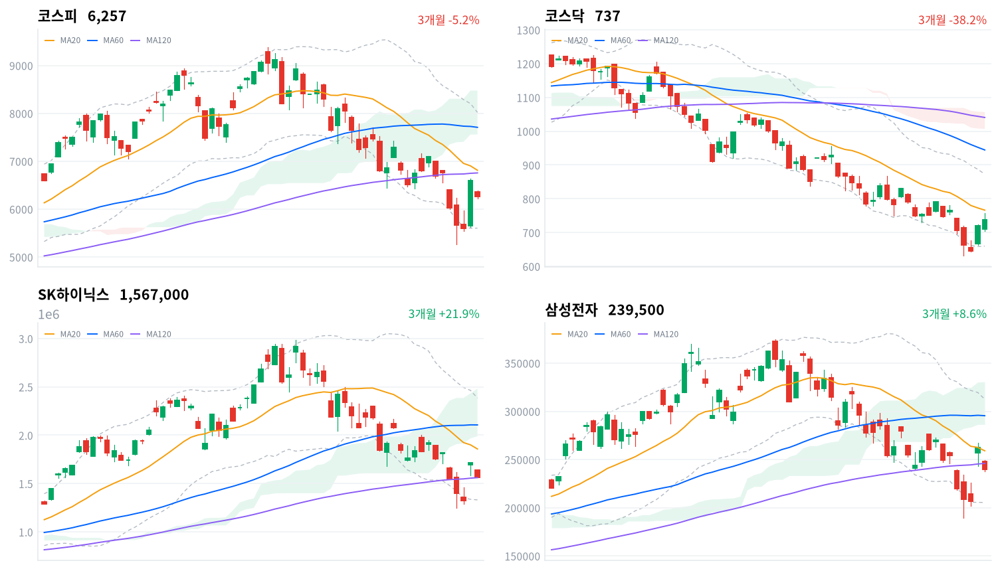

코스피는 전 거래일(7월 31일) 사상 최대폭(+17.91%) 급등의 반작용으로 차익실현 매물이 반도체 대형주에 집중되며 5.12% 밀렸다. 코스닥은 오전 10시28분 매수 사이드카까지 발동되며 바이오·헬스케어·통신장비 업종 주도로 2.44% 올라, 자금이 반도체에서 비반도체로 옮겨가는 디커플링 장세가 하루 종일 이어졌다.
동인오늘 장을 움직인 축은 두 가지다. 하나는 7월 31일 사상 최대 폭 급등(+17.91%) 다음 거래일에 나온 반도체 대형주 차익실현으로, SK하이닉스(-8.79%, 156만7,000원)와 삼성전자(-8.76%, 23만9,500원)가 나란히 급락하며 코스피를 6,257.45(-5.12%)까지 끌어내렸다. 다른 하나는 코스닥의 반대 흐름으로, 오전 10시28분 코스닥150 선물이 전일 대비 6.41%(75.80포인트) 급등하고 현물지수도 3.13% 오르며 매수 사이드카가 발동돼 생물공학(+6.51%)·통신장비(+4.73%) 등 비반도체 업종이 지수를 737.35(+2.44%)까지 밀어올렸다.
정합성코스피의 외국인 순매도(-2조8,220억원, 당일 잠정)는 SK하이닉스(-1조7,667억원)와 삼성전자(-9,455억원) 두 종목의 순매도 합(-2조7,122억원)만으로 전체의 약 96%가 설명돼, 오늘 급락이 넓은 매도가 아니라 반도체 대형주 2종목에 쏠린 외국인 이탈이었음을 보여준다. 프로그램 매매에서도 비차익 순매도(-2조1,620억원)가 총 순매도(-2조2,847억원)의 대부분을 차지해 선물 재정(차익, -1,227억원)이 아니라 현물 방향성 매도가 지수를 눌렀다는 점이 확인되며, 이는 외국인·기관(-1조9,516억원) 순매도 방향과도 정합적이다. 반면 코스닥은 지수가 올랐음에도 프로그램 비차익이 -1,845억원 순매도(전체 -1,785억원)를 기록해, 이번 상승이 지수 구성 대형주의 프로그램 매수가 아니라 breadth 76.4%(통신장비)·67.2%(생물공학) 등 폭넓은 개별 종목 매수에서 나왔다는 뜻으로 읽힌다 — 지수 구성비가 낮은 종목군의 저변 확산이 프로그램 지표에는 잡히지 않은 셈이다.
확인 트리거코스피는 120일선(6,755.93, -7.38% 이격)과 20일선(6,811.48, -8.13%)을 모두 밑돌고 있어, 이 두 선 회복 여부가 급락이 일회성 조정에 그칠지 추가 되돌림으로 번질지를 가를 1차 분기점이다. 실패해 전환선(6,214.39)마저 이탈하면 볼린저 하단(5,602.74) 쪽 되돌림 위험이 커진다. 코스닥은 여전히 역배열(20일선 766.36 아래) 구조를 벗어나지 못했다는 점, 정책 측면에서는 8월 27일 한은 금통위와 미국의 과잉생산 관세 발표 시점(일정 미확정)이 다음 확인 지점이다.
| 지수 | 종가 | 등락률 | 일중고가 | 일중저가 |
|---|---|---|---|---|
| 코스피 | 6,257.45 | -5.12% | 6,393.00 | 6,223.29 |
| 코스닥 | 737.35 | +2.44% | — | — |
코스닥은 일중 고가·저가 데이터가 제공되지 않아 종가·등락률만 표기했다.
코스피는 전일 종가 6,595.45 대비 6,358.27로 갭 하락 출발했다(약 -3.6%). 개장 직후 30분봉 종가가 6,325.23까지 밀린 데 이어 09시30분 6,239.26으로 한 차례 더 낙폭을 키우며 일중 저가(6,223.29) 부근까지 근접했고, 10시에는 6,356.37까지 반등해 일중 고가(6,393.00) 근처를 스쳤다.
이후 오전 내내 6,300~6,320 구간에서 등락하다 12시30분 이후 6,265~6,281 구간으로 한 단계 낮아진 박스권을 그렸고, 오후 3시 6,244.76까지 재차 밀렸다. 마감 직전 소폭 반등해 15시30분 6,257.41, 최종 6,257.45(-5.12%)로 마쳤다.
코스닥은 오전 10시28분 코스닥150 선물이 전일 대비 6.41%(75.80포인트) 급등하고 현물지수도 3.13% 오르며 매수 사이드카가 발동돼 프로그램 매수 호가 효력이 5분간 정지됐다. 10시37분 해제 시점 코스닥은 3.36% 오른 743.92를 기록 중이었고(한국경제, 세계일보, 파이낸셜뉴스), 이후 오후 들어 상승폭을 다소 반납하며 최종 +2.44%인 737.35로 마감했다.

코스피·코스닥·SK하이닉스·삼성전자 3개월 일봉 캔들에 20·60·120일 이동평균, 볼린저밴드(점선), 일목균형표 구름대(음영)를 오버레이했다. 상승은 녹색, 하락은 적색 캔들로 표시된다.
코스피는 6,257.45로 마감해 20일선(6,811.48, -8.13% 이격)과 60일선(7,708.06, -18.82%)을 밑돌고 120일선(6,755.93, -7.38%)도 하회해 이동평균선 배열이 혼조 상태다. 일목균형표상 전환선(6,214.39)이 기준선(7,062.24) 아래에 있고 가격도 구름대 하단(7,557.91) 밑에 위치해 추세 회복이 확인된 국면은 아니며, 볼린저밴드 %b는 0.271로 중심선(6,811.48)과 하단(5,602.74) 사이 하단권에 걸쳐 있다.
상승 시나리오는 120일선(6,755.93)과 20일선(6,811.48) 회복이 1차 확인 지점이며, 이를 넘어서면 기준선(7,062.24)→구름대 하단(7,557.91)→60일선(7,708.06)→볼린저 상단(8,020.22)→20일 스윙 고점(8,327.26)→구름대 상단(8,476.50)을 거쳐 60일 스윙 고점(9,385.59)까지 저항이 이어진다. 하락 시에는 전환선(6,214.39) 이탈→볼린저 하단(5,602.74)→20·60일 스윙 저점(5,262.77)이 최후 지지선 순서다.
코스닥은 737.35로 마감해 20일선(766.36, -3.79% 이격)·60일선(944.48, -21.93%)·120일선(1,040.66, -29.15%)을 모두 밑돌며 단기선이 장기선 아래 놓인 역배열 구조를 유지한다. 전환선(710.64)은 종가 아래 있으나 기준선(793.22)과 구름대(1,006.88~1,056.74)는 그보다 훨씬 위쪽에 있어 추세 전환 확인까지는 거리가 있고, 볼린저 %b는 0.364로 코스피(0.271)보다는 다소 높지만 여전히 중심선 아래쪽이다.
상승 트리거는 20일선(766.36) 회복이며, 이후 기준선(793.22)→20일 스윙 고점(872.12)→볼린저 상단(872.85)→60일선(944.48)→구름대 하단(1,006.88)→120일선(1,040.66)→구름대 상단(1,056.74)까지 저항이 겹겹이 남아 있고 최종 목표는 60일 스윙 고점(1,225.29)이다. 하락 시에는 전환선(710.64) 이탈→볼린저 하단(659.87)→20·60일 스윙 저점(630.99)이 최후 지지선이다.
SK하이닉스는 1,567,000원으로 마감해 20일선(1,857,500원, -15.64% 이격)과 60일선(2,106,483원, -25.61%)은 밑돌지만 120일선(1,561,200원)은 0.37% 웃돌아 이동평균선이 뒤섞인 혼조 배열이다. 전환선(1,626,000원)·기준선(2,063,000원)·구름대(1,988,500원~2,482,250원)가 모두 종가 위쪽에 있어 추세 신호는 아직 뚜렷하게 돌아서지 않았고, 볼린저 %b는 0.224로 하단에 가깝게 눌려 있다.
상승 시나리오는 전환선(1,626,000원) 회복을 기점으로 20일선(1,857,500원)→구름대 하단(1,988,500원)→기준선(2,063,000원)→60일선(2,106,483원)→볼린저 상단(2,383,992원)→구름대 상단(2,482,250원)→20일 스윙 고점(2,497,000원)을 거쳐 60일 스윙 고점(2,987,000원)까지 저항이 이어진다. 하락 시에는 120일선(1,561,200원) 이탈→볼린저 하단(1,331,008원)→20·60일 스윙 저점(1,246,000원)이 최후 지지선이다.
삼성전자는 239,500원으로 마감해 120일선(245,974원, -2.63% 이격)과 20일선(259,050원, -7.55%)을 모두 밑돌고 60일선(295,442원, -18.93%)과는 격차가 더 벌어져 있어 이동평균선 배열이 혼조다. 전환선(232,600원)은 종가 아래 있으나 기준선(272,850원)·구름대(286,350원~330,625원)는 위쪽에 있어 가격이 구름대 아래에 머무는 국면이며, 볼린저 %b는 0.317로 중심선 아래쪽에 위치한다.
상승 트리거는 120일선(245,974원) 회복 이후 20일선(259,050원)→기준선(272,850원)→구름대 하단(286,350원)→60일선(295,442원)→볼린저 상단(312,591원)→20일 스윙 고점(325,000원)→구름대 상단(330,625원)을 거쳐 60일 스윙 고점(374,500원)까지 열려 있다. 하락 시에는 전환선(232,600원) 이탈→볼린저 하단(205,509원)→20·60일 스윙 저점(189,200원)이 최후 지지선 순으로 짚인다.
위 레벨은 모두 이동평균·볼린저밴드·일목균형표·스윙 고저의 기계적 계산값이며 투자 권유가 아니다.
코스피·코스닥 수급은 2026-08-03 당일 잠정치다(kr_flows.json label: 당일 잠정치, stale: false). 코스피에서 외국인이 -2조8,220억원, 기관이 -1조9,516억원으로 나란히 순매도한 반면 개인은 +4조6,523억원 순매수해 저가 매수에 나섰다. 코스닥에서는 외국인이 -2,092억원 순매도했지만 기관이 +1,669억원, 개인도 +302억원으로 소폭 순매수 우위를 보였다.
| 시장 | 개인 | 외국인 | 기관 |
|---|---|---|---|
| 코스피 (당일 잠정) | +46,523억원 | -28,220억원 | -19,516억원 |
| 코스닥 (당일 잠정) | +302억원 | -2,092억원 | +1,669억원 |
단위 억원. kr_flows.json 기준 2026-08-03 당일 잠정치(label: 당일 잠정치, stale: false).
코스피에서 외국인·기관이 동반 순매도한 방향은 지수 급락(-5.12%)과 정합적이며, 개인의 대규모 순매수(+4조6,523억원)는 급락을 저가 매수 기회로 받아들인 반대매매 성격이다. 코스닥은 외국인만 순매도하고 기관·개인이 모두 순매수해, 지수 상승(+2.44%)의 동력이 외국인이 아니라 기관·개인의 비반도체 업종 매수에서 나왔다는 점이 확인된다.
| 시장 | 차익 순매수 | 비차익 순매수 | 전체 순매수 |
|---|---|---|---|
| 코스피 (당일 잠정) | -1,227억원 | -21,620억원 | -22,847억원 |
| 코스닥 (당일 잠정) | +60억원 | -1,845억원 | -1,785억원 |
단위 억원. kr_program.json 2026-08-03 당일 잠정치(row[0]).
코스피 비차익 순매도(-2조1,620억원)가 전체 순매도(-2조2,847억원)의 대부분을 차지해, 이번 급락이 선물 베이시스에 따른 차익거래(-1,227억원)보다 방향성 바스켓 매도(비차익)에서 비롯됐음을 뒷받침한다. 이는 외국인(-2조8,220억원)·기관(-1조9,516억원)의 순매도 방향과 정확히 일치해, 오늘 하락이 프로그램·비프로그램을 가리지 않고 일관된 매도 압력이었다는 판단을 강화한다.
반면 코스닥은 지수가 올랐음에도 비차익이 -1,845억원 순매도(전체 -1,785억원)를 기록해 지수 상승분이 프로그램 매수가 아니라 프로그램 바스켓 밖의 개별 종목 매수에서 나왔다는 괴리가 나타난다.
| 종목/ETF | 구분 | 거래대금(백만원) | 조 환산 |
|---|---|---|---|
| SK하이닉스 | 종목 | 8,635,463 | 8.64조원 |
| 삼성전자 | 종목 | 6,632,508 | 6.63조원 |
| SK하이닉스 레버리지 | 레버리지(롱) | 713,035 | 0.71조원 |
| 삼성전자우 | 종목(우선주) | 565,108 | 0.57조원 |
| TIGER 반도체TOP10 | 업종테마ETF | 441,218 | 0.44조원 |
| 삼성전자 레버리지 | 레버리지(롱) | 319,513 | 0.32조원 |
| SOL AI반도체TOP2플러스 | 업종테마ETF | 309,799 | 0.31조원 |
| KODEX 반도체레버리지 | 업종테마ETF | 294,877 | 0.29조원 |
| KODEX 반도체 | 업종테마ETF | 231,205 | 0.23조원 |
| KODEX AI반도체TOP2플러스 | 업종테마ETF | 221,860 | 0.22조원 |
같은 기초자산 ETF를 방향별로 묶고 지수·해외 ETF 제외. 코스피200·코스닥150 추종 및 그 레버리지·인버스는 정규화 단계에서 제외돼 표에 없다.
SK하이닉스(8.64조원)·삼성전자(6.63조원) 두 종목의 거래대금이 압도적 1·2위를 차지했고, 급락 속에서도 SK하이닉스 레버리지(롱, 7,130억원)가 3위에 오른 반면 인버스(숏) 상품은 상위 10위 안에 들지 못했다. 이는 개인 투자자들이 8%대 급락에도 상승 베팅을 우선했다는 뜻으로 읽힌다.
TIGER 반도체TOP10·SOL AI반도체TOP2플러스·KODEX 반도체레버리지·KODEX 반도체·KODEX AI반도체TOP2플러스까지 반도체 테마 ETF 5종이 나란히 상위권을 채워, 급락일에도 자금이 반도체 섹터 안에서 종목·ETF를 가리지 않고 몰려 있음을 보여준다.
위 섹터 멀티기간 막대는 별도 브로커 섹터 분류 기준(1D~1Y)이며, 아래 업종 표는 GICS 유사 업종 분류의 breadth(상승 종목 비율) 크로스체크다. 이번 GICS 유사 분류에는 반도체 관련 업종이 별도 항목으로 잡히지 않아 표에는 나타나지 않는다.
| 업종 | 등락률 | breadth | 판정 |
|---|---|---|---|
| 생물공학 | +6.51% | 67.2% | 폭넓은 상승 주도 |
| 통신장비 | +4.73% | 76.4% | 폭넓은 상승 주도 |
| 판매업체 | +4.38% | 76.9% | 폭넓은 상승 주도 |
| 건강관리업체및서비스 | +4.36% | 73.3% | 폭넓은 상승 주도 |
| 건강관리기술 | +3.88% | 83.3% | 폭넓은 상승 주도 |
| 건강관리장비와용품 | +3.54% | 63.8% | 폭넓은 상승 주도 |
| 생명과학도구및서비스 | +3.38% | 65.9% | 폭넓은 상승 주도 |
| 항공사 | +3.30% | 100.0% | 폭넓은 상승 주도 |
| 핸드셋 | +3.15% | 71.9% | 폭넓은 상승 주도 |
| 기계 | +2.84% | 77.9% | 폭넓은 상승 주도 |
단위 %. kr_industry.json. breadth는 업종 내 상승 종목 비율.
상위 10개 업종은 등락률과 breadth가 모두 60%를 넘어 소수 종목이 아니라 업종 전체가 함께 오른 폭넓은 상승 주도로 확인되며, 이는 코스닥 급등이 생물공학·건강관리·통신장비 등 비반도체 업종의 저변 확산에서 나왔다는 오늘의 헤드라인과 정확히 부합한다. 반면 순위 바로 아래인 전자장비와기기(+2.68%, breadth 52.8%)는 등락률 자체는 준수하지만 breadth가 절반 남짓에 그쳐 일부 개별 종목이 등락률을 견인한 좁은 상승으로 구분해야 한다.
은행(+0.58%, breadth 54.5%)과 기타금융(+1.18%, breadth 50.0%)도 각각 좁은 상승·개별종목으로 분류돼, 밸류업 수혜가 기대되는 저PBR 업종은 오늘 반도체발 변동성에 가려 아직 뚜렷한 주도력을 보이지 못했다.
SK하이닉스는 8.79% 급락한 156만7,000원으로 마감했음에도 거래대금 8.64조원으로 1위를 지켰다. 외국인이 1조7,667억원을 순매도하며 낙폭을 키웠고, 일부 증권가는 목표주가를 420만원에서 280만원으로 낮춰 잡았다는 보도가 나왔다(파이낸셜뉴스, EBC Financial Group).
삼성전자는 8.76% 하락한 23만9,500원으로 거래대금 6.63조원 2위를 차지했고 외국인 순매도도 9,455억원에 달했다(TradingKey, Seoul Economic Daily). 두 종목의 외국인 순매도 합(2조7,122억원)이 코스피 전체 외국인 순매도(2조8,220억원)의 약 96%를 차지해, 이번 급락이 사실상 두 대형주에 집중된 외국인 이탈로 설명된다. 삼성전자는 이날 HBM4를 공개하며 SK하이닉스의 HBM 시장 지배력에 도전하는 경쟁 구도 변화 재료도 함께 부각됐다.
코스닥 급등의 주도주로 바이오·로봇株가 거론되지만 구체적 종목명은 이번 리서치에서 특정되지 않아, 생물공학(+6.51%)·건강관리업체및서비스(+4.36%)·건강관리기술(+3.88%) 등 업종 단위로만 다룬다. 낸드플래시 가격 하락과 미국 AI 반도체주(엔비디아 등) 조정 동조, SK하이닉스 시가총액이 삼성전자를 추월한 것이 강세장 정점 신호라는 사전 경고 등이 복합적으로 반도체 대형주 급락의 배경으로 지목된다(YTN, EBC Financial Group).
이번 데이터셋에는 원/달러 종가 수치가 포함되지 않아 환율 서술은 생략한다.
| 지표 | 금리 | 전일比(bp) | 기준일 |
|---|---|---|---|
| 국고채 3년 | 3.742% | -1.6bp | 2026-08-03 |
| 국고채 10년 | 4.264% | +0.3bp | 2026-08-03 |
| CD 91일 | 2.93% | -2.0bp | 2026-08-03 |
| 회사채 AA- 3년 | 4.462% | -1.6bp | 2026-08-03 |
| 한국은행 기준금리 | 2.50% | 0.0bp | 2026-06 기준(월간 지표) |
단위 연%. ECOS(한국은행 경제통계시스템) 기준. 한국은행 기준금리는 월간 지표로 2026-06 갱신치이며 report_date(2026-08-03)와 기준일이 다르다.
국고채 3년물(-1.6bp)이 소폭 하락하고 10년물(+0.3bp)은 소폭 상승해, 10년-3년 스프레드가 전 거래일(7/31 기준) 0.503%p에서 0.522%p로 확대됐다 — 장단기 금리차가 완만하게 벌어지는 스티프닝 흐름이다. 원/달러 환율 데이터가 없어 국고채 10년물↔외국인 순매도↔원화 흐름의 삼각 연계는 이번 브리프에서 점검할 수 없다. 회사채 AA- 3년과 국고채 3년의 스프레드는 0.720%p로 전 거래일과 동일하게 유지돼, 반도체 대형주 급락에도 신용 심리는 안정적으로 유지되고 있다.
kr_econ.json의 한국은행 기준금리 항목은 여전히 2026-06 기준 2.50%로 남아 있어, research_notes.md가 전하는 7월 16일 한은의 2.75% 인상 소식이 아직 이 월간 지표에는 반영되지 않은 상태다. 실제 정책금리(2.75%)를 기준으로 보면 국고채 3년물(3.742%)이 오히려 정책금리보다 약 1.0%p 높아, 시장이 추가 인상 가능성을 일부 선반영하고 있다고 볼 수 있다.
트럼프 행정부가 상호관세를 대신할 신규 관세 체계를 도입하며 한국에도 사실상 12.5% 관세가 적용된 것으로 전해졌고, 조만간 발표될 '과잉생산(초과생산) 관세'까지 더해질 경우 한미 협상에서 확보한 15% 총관세 수준이 흔들릴 수 있다는 우려가 제기된다. AI 반도체에는 25% 관세가 공식화됐고, 대만은 대미 반도체 수출 무관세 쿼터에 합의한 것으로 보도된다(파이낸셜뉴스, 세계일보, KDI).
관세는 반도체·자동차·철강 등 대미 수출 비중이 높은 업종의 이익(원가·마진) 경로로 직접 닿는다. 대만이 무관세 쿼터를 확보했다면 한국 반도체가 상대적 가격 경쟁력에서 밀릴 수 있어 외국인 배분이라는 수급 경로에도 영향을 줄 수 있다.
반도체·자동차·철강 등 대미 수출주가 피해 구간으로 꼽히지만, 오늘 반도체 대형주 급락(SK하이닉스 -8.79%, 삼성전자 -8.76%)의 1차 동인은 차익실현과 밸류에이션 조정이지 관세 재료로 보기 어렵다 — 관세 이슈는 아직 가격에 반영되지 않은(선반영 미흡) 잠재 리스크로 판단한다.
과잉생산 관세의 구체 발표 시점은 일정 미확정이다. 발표 시 대미 수출 비중이 높은 반도체·자동차·철강주의 외국인 수급과 주가 반응을 확인 트리거로 삼는다.
한국은행 금융통화위원회는 2026년 7월 16일 통화정책방향 결정에서 물가가 목표 수준을 상당 기간 상회한다는 판단 아래 기준금리를 2.50%에서 2.75%로 만장일치 인상한 것으로 보도된다. 다음 회의는 8월 27일로 예정돼 있다(파이낸셜뉴스). kr_econ.json(ECOS) 상 기준금리 계열은 2026-06 기준 2.5%로 게재돼 있어 7월 인상분은 아직 이 월간 지표에 반영되지 않았다.
기준금리 인상은 유동성(단기자금 조달비용) 경로로 증시 전반의 밸류에이션 멀티플에 영향을 준다. 특히 이번 인상은 과열된 반도체 랠리에 대한 간접적 냉각 신호로 해석될 여지가 있다.
고밸류에이션·고베타 성장주(반도체 등)가 금리 인상에 상대적으로 더 민감하다. 은행 업종은 순이자마진 개선 기대로 완만한 수혜 구간으로 꼽히지만, 이날 은행 업종은 +0.58%(breadth 54.5%, 좁은 상승·개별종목)에 그쳐 아직 뚜렷하게 반영되지 않은 모습이다.
8월 27일 금통위가 다음 확인 지점이다. 그 전까지 국고채 3년물(3.742%)과 실제 정책금리(2.75%)의 스프레드로 추가 인상 기대 선반영 여부를 점검한다.
2025년 정부 출범 이후 상법 개정이 추진돼 이사의 충실의무 대상이 기존 "회사"에서 "회사 + 주주 전체의 비례적 이익"으로 확대된 것으로 알려졌다. 한국거래소는 2026년 기업가치제고(밸류업) 프로그램 백서를 발간하는 등 밸류업 프로그램이 일회성이 아닌 장기 과제로 자리잡고 있다는 평가가 나온다(나무위키, KRX 백서, siglab).
이사 충실의무 확대는 멀티플(거버넌스 할인 축소) 경로로 코리아 디스카운트 해소에 영향을 준다. 밸류업 프로그램은 배당·자사주 확대를 유도해 같은 멀티플 경로로 작동한다.
저PBR·고배당 전통 대형주(금융지주·지주사 등)가 구조적 수혜 구간으로 꼽혀왔다. 이날 은행(+0.58%, breadth 54.5%)·기타금융(+1.18%, breadth 50.0%) 업종은 모두 좁은 상승·개별종목으로 분류돼, 반도체발 변동성에 가려 오늘 하루로는 아직 뚜렷하게 반영되지 않았다.
상법 개정 후속 시행령·거래소 밸류업 백서 후속 조치 일정은 미확정이다. 밸류업 공시 기업 확대·저PBR주 수급 개선 여부를 다음 확인 포인트로 삼는다.